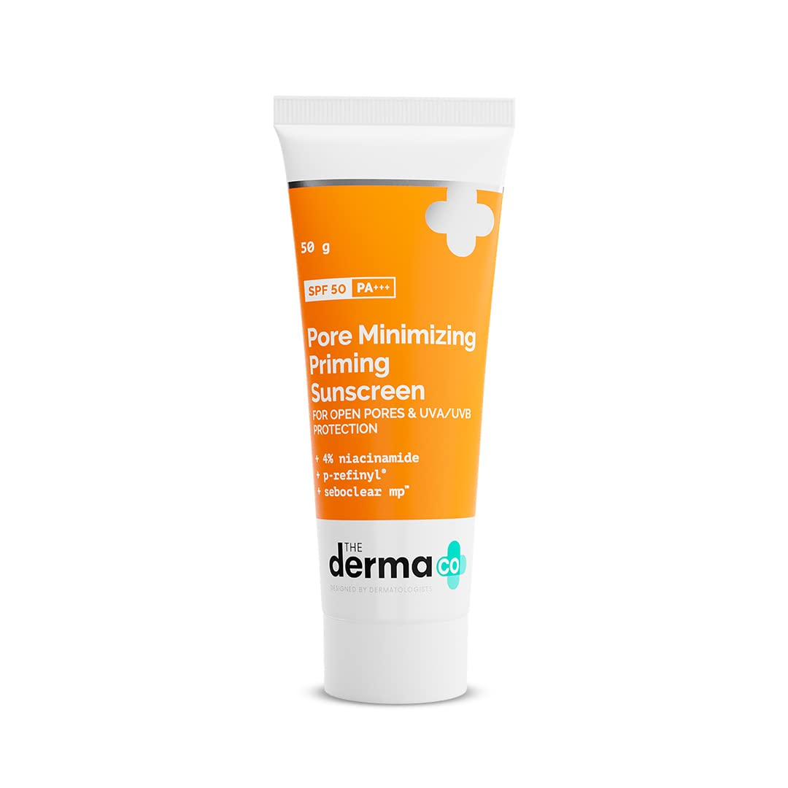
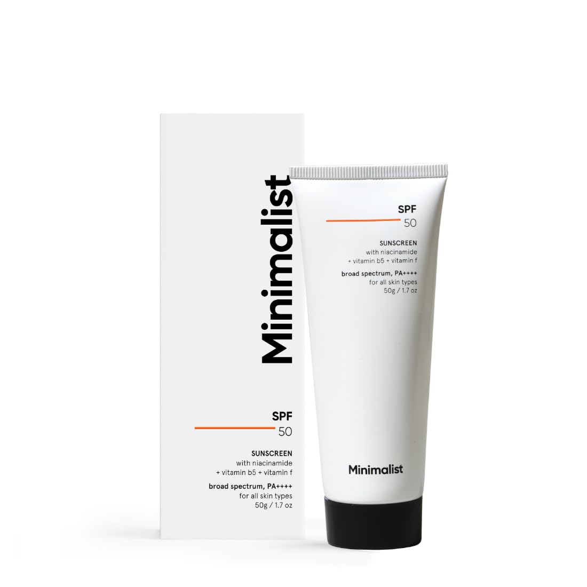
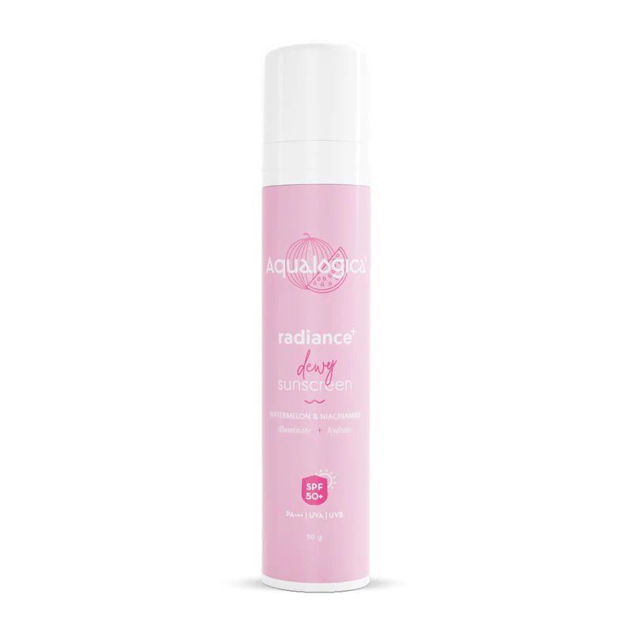

The Importance of Sunscreen
Using sunscreen daily helps to protect your skin from the harmful effects of UV radiation, including premature aging, wrinkles, and even skin cancer. It’s crucial to choose the right sunscreen based on your skin type and the climate you live in.
Why SPF Matters?
SPF stands for Sun Protection Factor and indicates how much UV radiation is blocked by the sunscreen. Higher SPF provides more protection, but it’s equally important to reapply sunscreen every few hours, especially if you are sweating or in the water.
There are 2 types of sunscreens
1. Chemical sunscreens
These sunscreens absorb the harmful rays of the sun. Thus they act like a sponge. They contain ingredients like oxybenzone, avobenzone, octocrylene, homosalate, and octinoxate. The formulation of these sunscreens gets absorbed in the skin easily and does not leave a white “cast.”

2. Physical Sunscreens
These are also known as mineral sunscreen and they work like a shield. Instead of getting absorbed, they sit on the skin’s surface and deflect the harmful UV rays. Active ingredients like zinc oxide and titanium dioxide present in these sunscreens help the sensitive skin of the face feel less irritated.

How To Choose The Best Sunscreen For Face?
1. Go For a Broad Spectrum Formulation
While reading the label of the sunscreen, make sure it has the term “broad spectrum” written on it. This indicates that the sunscreen protects against both UVA and UVB rays. The best sunscreen ought to have a broad-spectrum formulation.
2. Consider SPF 30 and Above
SPF stands for sun protection factor and it is a measure of how well your sunscreen is protecting your skin from UVB rays. Make sure that the sunscreen you buy is SPF 30 or above. We recommend selecting SPF 50 for the best sun protection.
3. Select the Right Type of Sunscreen Based on Your Skin Type
We explained above that there are two types of sunscreen. Chemical sunscreens are said to be more effective but are deemed unsafe for children, pregnant women and lactating mothers.
Physical sunscreen goes well on sensitive skin as it contains less amount of chemical ingredients. Choose a sunscreen based on your health and skin concerns.
4. Avoid Fragrance and Harsh Ingredients
Fragrant sunscreens and those that contain unnecessary ingredients can irritate your skin instead of shielding it against sun rays. Make sure to do a patch test before using a new sunscreen on your face.
Top Sunscreens You Should Try
1. Dr. Sheth's Ceramide & Vitamin C Sunscreen

Dr Sheth is a well-known pharmacy brand in India and is trusted for its products that are well suited for the Indian skin. This SPF 50+ sunscreen offers protection from both UVA and UVB and promises to leave no white cast. It contains ceramides, hyaluronic acid and Vitamin C complex that can benefit your skin in addition to shielding it from harmful sun rays.
2. Cetaphil Sun SPF 50 Very High Protection Light Gel

In addition to protecting against UVA and UVB, this board spectrum sunscreen also promises to protect against infrared rays of the sun. For oily skin people, who do not like heavy sunscreen, this is the right gel-based formulation that gets absorbed quickly in the skin. This mineral sunscreen also contains Vitamin E that nourishes the outer layers of the skin. The non-sticky formulation is also water-resistant.
3. The Derma Co Pore Minimizing Priming Sunscreen with SPF 50

If you’re looking to treat your open pores in addition to getting sun protection, this sunscreen can be a good choice for you. It is packed with niacinamide and P-Refinyl that control excess oil production.
4. Minimalist Sunscreen SPF 50 Lightweight with Multi-Vitamins

This sunscreen contains effective UV filters and multivitamins to protect the skin from the sun and repair the skin barrier. It also promises to leave no white cast.
5. Aqualogica Radiance+ Dewy Sunscreen SPF 50

If you’re looking for the best sunscreen to use during the summer months, this product can be ideal. With niacinamide and watermelon extracts, it can help you protect your skin while keeping it cool and hydrated.
6. Neutrogena Ultra Sheer Sunscreen, SPF 50+

This non-comedogenic sunscreen has a non-shiny and lightweight texture. Thus, if you’re looking for a good matte finish sunscreen, you can purchase this product.